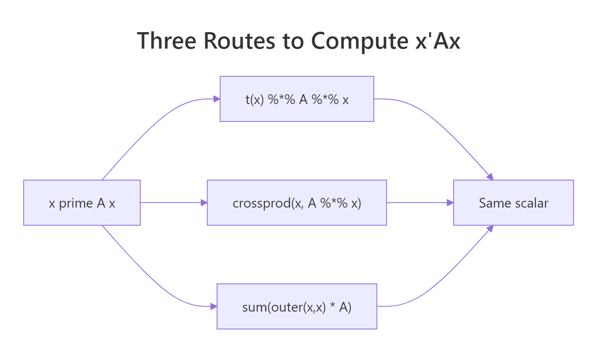
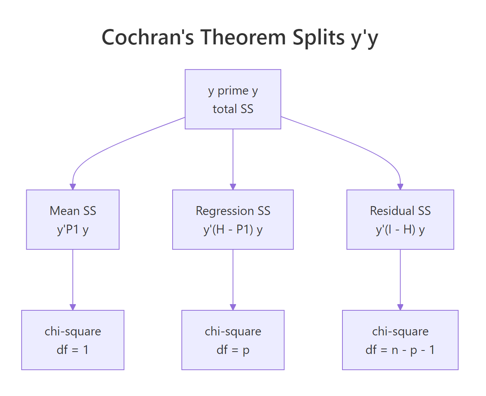
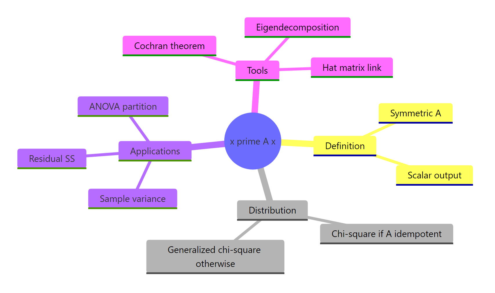

Quadratic Forms in R: Chi-Squared Connection & Distribution of X'AX
A quadratic form is the scalar $X^\top A X$ produced when a vector $X$ and a symmetric matrix $A$ are sandwiched into a single product. In statistics, every sum of squares you meet, sample variance, residual sum of squares, ANOVA partitions, is a quadratic form for some $A$. Under the right conditions on $A$, this scalar follows a chi-squared distribution, which is why so many tests in linear models reduce to chi-square or F.
What is X'AX, and why does it appear everywhere in statistics?
Most sums of squares in statistics are the same algebraic object dressed up differently. Sample variance, deviance, regression SS, and ANOVA partitions are all the scalar $x^\top A x$ for some symmetric matrix $A$. Computing this scalar by hand on a small example is the fastest way to see why one formula keeps reappearing. We will build a 3-element vector and a 3-by-3 symmetric matrix, then check the matrix product against the explicit double sum.
Both routes return 46. The matrix expression t(x) %*% A %*% x performs the same arithmetic as the double sum $\sum_{i,j} A_{ij} x_i x_j$, so the two must agree. The double-sum form is the textbook definition. The matrix form is the one we will use everywhere because it scales cleanly to vectors of any length without changing notation.
Try it: Set $A$ to the 3-by-3 identity matrix and compute $x^\top A x$ for the same x. Does the answer equal sum(x^2)?
Click to reveal solution
Explanation: With $A = I$, the formula collapses to $x^\top x = \sum x_i^2$. So the plain sum of squares is the simplest non-trivial quadratic form.
How do you compute X'AX efficiently in R?
R gives you several syntactically distinct routes to the same scalar. The differences matter when the vector has thousands of elements or when you call the routine inside a tight simulation loop. We will time three idiomatic versions on a vector of length 1000 so you can see what the cost actually is.
All three agree on the scalar. The matrix-product and crossprod versions cost effectively the same because both reduce to two matrix-vector products. The outer() route is roughly four times slower since it materialises the full $n \times n$ outer product before summing. For any serious work, prefer one of the first two.

Figure 1: Three equivalent ways to compute the scalar x'Ax in R.
crossprod() skips one transpose internally. crossprod(big_x, big_A %*% big_x) computes $x^\top (A x)$ without forming t(big_x) explicitly. On large matrices the saving is small, but it also reads more naturally as inner product, which is what a quadratic form is.Try it: Build a 5-by-5 symmetric matrix from crossprod(matrix(rnorm(25), 5, 5)), compute $x^\top A x$ for ex_x5 <- 1:5 using crossprod(), and confirm the answer matches t(ex_x5) %*% A %*% ex_x5.
Click to reveal solution
Explanation: crossprod(x, M) returns $x^\top M$. Wrapping the inner $A x$ first turns the whole expression into one matrix-vector product followed by one inner product.
When is X'AX chi-square distributed?
Here is the central theorem. If $X \sim \mathcal{N}(0, I_n)$ (a vector of independent standard normals) and $A$ is a symmetric idempotent matrix of rank $r$, then $X^\top A X$ follows a chi-squared distribution with $r$ degrees of freedom. Idempotent means $A^2 = A$, the algebraic property that defines projection matrices. So every projection matrix on a normal random vector spits out a chi-square.
The simplest non-trivial example is the centring matrix $M = I - \frac{1}{n} \mathbf{1}\mathbf{1}^\top$, which subtracts the sample mean from each element. It is symmetric, idempotent, and has rank $n - 1$. We will simulate 5000 standard-normal vectors, compute $X^\top M X$ for each, and overlay the empirical density on the theoretical $\chi^2_{n-1}$ density.
The empirical mean (6.985) sits right next to the theoretical mean of $n - 1 = 7$, and the red density curve lines up with the histogram. The centring matrix is doing exactly what the theorem promises: turning a Gaussian random vector into a chi-square with degrees of freedom equal to its rank. This is why $\frac{(n-1) s^2}{\sigma^2} \sim \chi^2_{n-1}$, the textbook fact behind every confidence interval for variance.
Try it: Build the projection onto the line spanned by $\mathbf{1}$, namely $P = \frac{1}{n} \mathbf{1}\mathbf{1}^\top$. It has rank 1, so $X^\top P X$ should follow $\chi^2_1$. Simulate 5000 draws and check that the mean is close to 1.
Click to reveal solution
Explanation: The mean projection $P = \frac{1}{n} \mathbf{1}\mathbf{1}^\top$ has rank 1, so $X^\top P X \sim \chi^2_1$ with theoretical mean 1. Note also that $M + P = I_n$, the centring matrix and the mean projection are complements that split the identity.
Why is the residual sum of squares a chi-square quadratic form?
This is where the theorem pays for itself in everyday regression. Fit OLS to predictors $X$ and let $H = X(X^\top X)^{-1} X^\top$ be the hat matrix. The residual maker $I - H$ is symmetric, idempotent, and has rank $n - p$ where $p$ counts the columns of $X$. So if errors are $\varepsilon \sim \mathcal{N}(0, \sigma^2 I)$, then $\frac{\text{RSS}}{\sigma^2} = \frac{y^\top (I - H) y}{\sigma^2} \sim \chi^2_{n-p}$. That is why $t$-statistics in summary(lm(...)) follow a $t_{n-p}$ distribution.
The two routes agree on the scalar 195.05, and the residual degrees of freedom (29) match df.residual(model). From here, dividing by $\sigma^2$ would give a value distributed as $\chi^2_{29}$ under the model, which is what the F-test in anova(model) exploits.
Try it: Fit lm(mpg ~ wt, data = mtcars), build the residual maker $M_e^{(1)} = I - H_1$ for that design, compute RSS as a quadratic form, and verify it equals deviance(model_simple).
Click to reveal solution
Explanation: Removing the hp column from the design grows RSS (fewer predictors absorb less variance). The mechanics are unchanged: build the residual maker, sandwich y, get a scalar.
What is Cochran's theorem and how does it underpin ANOVA?
Cochran's theorem is the chi-square decomposition story scaled up. If $I_n = \sum_{j=1}^k A_j$ where each $A_j$ is symmetric and the ranks add up to $n$, then $y^\top A_j y$ are independent chi-squared random variables with degrees of freedom equal to $\text{rank}(A_j)$. In regression we get exactly such a decomposition: total $y^\top y$ splits into a mean piece, a regression piece, and a residual piece, and Cochran says all three are independent chi-squares.
The ranks 1, 2, 29 sum to 32 = $n$, which is the rank-additivity condition Cochran requires. The three sums of squares add up exactly to $y^\top y$, giving the partition you see in anova(model). Each piece is an independent chi-square (after dividing by $\sigma^2$), and the F-statistic for the regression is the ratio $(SS_\text{reg}/2) / (SS_\text{res}/29)$, which by definition follows $F_{2, 29}$.

Figure 2: Cochran's theorem partitions y'y into independent chi-squared pieces.
Try it: Confirm that ss_mean + ss_reg + ss_res equals sum(y^2) to numerical precision.
Click to reveal solution
Explanation: The three projection matrices $(P_\text{mean}, H_\text{reg}, M_e)$ sum to the identity, so the three quadratic forms must sum to $y^\top I y = y^\top y$. The decomposition is exact, not approximate.
What if X is not standard normal, do you get a generalized chi-squared?
When $A$ is symmetric but not idempotent, or when $X$ has covariance other than $I$, the scalar $X^\top A X$ no longer follows a plain chi-square. It follows a generalized chi-squared distribution: a weighted sum of independent $\chi^2_1$ variables, with weights given by the eigenvalues of $A$ (or of $\Sigma^{1/2} A \Sigma^{1/2}$ in general). The eigendecomposition makes this concrete.
The empirical mean equals the trace of $A$, which is the general identity $\mathbb{E}[X^\top A X] = \text{trace}(A \Sigma) + \mu^\top A \mu$ specialised to $\mu = 0$, $\Sigma = I$. The histogram is right-skewed but does not match the chi-square density we overlaid: a single eigenvalue (8.9) dominates and stretches the right tail, while the smaller eigenvalues compress the left side. This is the generalized chi-square in the wild.
CompQuadForm::imhof(). The Imhof method numerically inverts the characteristic function and returns the tail probability $\Pr(X^\top A X > q)$ to high accuracy. Use it whenever you need a p-value from a quadratic form whose $A$ is not idempotent, including score tests, robust Wald tests, and quadratic-form goodness-of-fit statistics.Try it: Confirm the relationship $\mathbb{E}[X^\top A X] = \text{trace}(A)$ when $X \sim \mathcal{N}(0, I)$, by computing both sides for A_psd.
Click to reveal solution
Explanation: For $\mu = 0$ and $\Sigma = I$, $\mathbb{E}[X^\top A X] = \text{trace}(A)$ regardless of whether $A$ is idempotent. Idempotency only constrains the distribution, not the mean.
Practice Exercises
Exercise 1: Build a reusable quad_form() function
Write a function quad_form(x, A) that returns the scalar $x^\top A x$ using crossprod. Validate that the input A is symmetric (use isSymmetric()) and stop with a message otherwise. Test it on the row of column means of iris[, 1:4] against the sample covariance matrix.
Click to reveal solution
Explanation: Wrapping the formula in a function keeps downstream code readable. The symmetry check catches a common bug when $A$ comes from a numerical procedure that introduces tiny asymmetry; pass unname() so dimnames do not throw off isSymmetric.
Exercise 2: Sample variance as a quadratic form
The unbiased sample variance is $s^2 = \frac{1}{n-1} y^\top M y$ where $M = I - \frac{1}{n}\mathbf{1}\mathbf{1}^\top$ is the centring matrix. Verify this on mtcars$mpg by computing the quadratic form by hand and comparing to var(mpg).
Click to reveal solution
Explanation: Centring $y$ by $M$ removes the mean. The squared length of the centred vector is $y^\top M y$, and dividing by $n - 1$ gives the unbiased variance. So var() is a quadratic form in disguise.
Exercise 3: Simulate the F-statistic from quadratic forms
Generate $y \sim \mathcal{N}(0, I_{32})$ on a fixed design with two predictors. Compute $SS_\text{reg}/2$ and $SS_\text{res}/29$ as quadratic forms, take their ratio, repeat 3000 times, and verify the histogram matches an $F_{2, 29}$ density.
Click to reveal solution
Explanation: The numerator is a chi-square with df 2 (rank of $H - P_\text{mean}$), the denominator is an independent chi-square with df 29. Their ratio, each scaled by its df, is the definition of an F-distributed variable. The simulated 95th-percentile coverage is within Monte Carlo noise of the nominal 0.95.
Complete Example
Putting all the pieces together, we will fit a 3-predictor regression on mtcars, compute the residual sum of squares as a quadratic form, simulate 2000 null residuals to confirm the chi-square distribution, and read a p-value from the simulated tail.
The empirical mean of the simulated RSS-over-$\sigma^2$ values (27.92) lands almost exactly on the theoretical degrees of freedom (28). The simulated tail probability for an inflated RSS of 42 is about 1.1%, in the same neighbourhood as 1 - pchisq(42, df = 28). So once you know the residual maker is symmetric idempotent, the entire chain of inference, RSS to chi-square to p-value, follows mechanically.
Summary
A quadratic form is the single algebraic object that unifies sums of squares across statistics. It computes cleanly in R, distributes as chi-square when its matrix is idempotent, and decomposes into independent pieces under Cochran's theorem.
| Concept | Formula | Distribution under $X \sim \mathcal{N}(0, I)$ |
|---|---|---|
| Plain sum of squares | $X^\top X$ | $\chi^2_n$ |
| Sample variance | $\frac{1}{n-1} X^\top M X$ where $M = I - \frac{1}{n}\mathbf{1}\mathbf{1}^\top$ | $(n-1) s^2 \sim \sigma^2 \chi^2_{n-1}$ |
| Residual SS | $y^\top (I - H) y$ | $\sigma^2 \chi^2_{n-p}$ |
| Regression SS | $y^\top (H - P_\text{mean}) y$ | $\sigma^2 \chi^2_{p-1}$ (under null) |
| Generic non-idempotent A | $X^\top A X$ | Generalized $\chi^2$ |

Figure 3: Quadratic forms connect computation, distribution theory, and applied statistics.
References
- Wikipedia. Quadratic form (statistics). Link)
- Wikipedia. Chi-squared distribution. Link
- Wikipedia. Generalized chi-squared distribution. Link
- Wikipedia. Idempotent matrix. Link
- Wikipedia. Cochran's theorem. Link
- Sandy Weisberg. Distribution Theory (Chapter 5 lecture notes). Link
- Mathai, A. M. and Provost, S. B. Quadratic Forms in Random Variables: Theory and Applications. CRC Press, 1992.
- Searle, S. R. Matrix Algebra Useful for Statistics. Wiley, 1982. Chapters 7-9.
- CompQuadForm. R package for distributions of quadratic forms. CRAN
- emulator. quad.form() reference. Link
Continue Learning
- Projections & the Hat Matrix in R: the geometry of $H = X(X^\top X)^{-1} X^\top$, which is the projection matrix that makes $I - H$ idempotent in section 4.
- Eigenvalues and Eigenvectors in R: the eigendecomposition we used in section 6 to express the generalized chi-square as a weighted sum of $\chi^2_1$ variables.
- QR Decomposition in R: a numerically stable alternative for building $H$ when the design matrix is poorly conditioned.